ASL3
Model Inference & Averaging¶
本书的大部分章节中，对于回归而言，模型的拟合（学习）通过最小化平方和实现；或对于分类而言，通过最小化交叉熵实现．事实上，这两种最小化都是用极大似然来拟合的实例．
这章中，我们给出极大似然法的一个一般性的描述，以及用于推断的贝叶斯方法．在第7章中讨论的自助法在本章中也继续讨论，而且描述了它与极大似然和贝叶斯之间的联系．最后，我们提出模型平均和改善的相关技巧，包括 committee 方法、bagging、stacking 和 bumping．
Maximum Likelihood Methods & Bootstrap¶
Maximum Likelihood Inference¶
Specify a probability density / mass function for observations
Likelihood function (function of \theta given Z )
Easy to deal with the logarithm of L(\theta ; Z)
Maximum Likelihood estimate
定义得分函数 Score function
Assuming likelihood takes its maximum in the interior of the parameter space, l(\hat{\theta} ; Z)=0 信息矩阵 Information matrix
- Observed information \left.I(\theta)\right|_{\theta=\hat{\theta}}
- Fisher information i(\theta)=E_{\theta}[I(\theta)] Fisher 信息量（或者期望信息量）
可以认为, Fisher 信息量是参数估计的方差.
相关推导参见 here 的注释.
Sampling distribution of MLE \hat{\theta}
where \theta_{0} denotes the true value of \theta Can be approximated by
Estimates for standard error of \hat{\theta}_{j}
Confidence interval
Joint confidence region
Since 2\left[l(\hat{\theta})-l\left(\theta_{0}\right)\right] \sim \chi_{p}^{2}
自助法和最大似然法¶
本质上自助法是非参最大似然或者参数最大似然法的计算机实现．The bootstrap can be thought of as a “nonparametric” MLE.
与最大似然法相比自助法的好处是允许我们在没有公式的情况下计算标准误差和其他一些量的最大似然估计．
Bayesian Methods¶
Posterior distribution of \theta given prior and data $$ p(\theta \mid Z)=\frac{p(Z \mid \theta) p(\theta)}{\int p\left(Z \mid \theta^{\prime}\right) p\left(\theta^{\prime}\right) d \theta^{\prime}} $$ Predictive distribution for new data $$ p\left(z^{\text {new }} \mid Z\right)=\int p\left(z^{\text {new }} \mid \theta\right) p(\theta \mid Z) d \theta $$ However, by Maximum Likelihood methods, the predictive distribution for new data z^{\text {new }} is p\left(z^{\text {new }} \mid \hat{\theta}_{M L E}\right), which does not account for the uncertainty in estimating \theta
Back to Example¶
- Let u(x)=\sum_{j=1}^{J} \beta_{j} h_{j}(X), B be the design matrix with i j_{t h} element h_{j}\left(x_{i}\right)
- Prior on \beta=\left(\beta_{1}, \ldots, \beta_{p}\right)^{\top}: \beta \sim \mathcal{N}(0, \tau \Sigma)
- Data likelihood: p(y \mid X, \beta)=\mathcal{N}\left(y ; B \beta, \sigma^{2} I_{n}\right)
- Posterior distribution for \beta : $$ p(\beta \mid Z)=p(\beta \mid X, y)=\frac{p(y \mid X, \beta) p(\beta)}{p(y \mid X)}=\mathcal{N}\left(\beta ; A^{-1} B^{\top} y, A^{-1} \sigma^{2}\right) $$ with A=B^{\top} B+\frac{\sigma^{2}}{\tau} \Sigma^{-1}
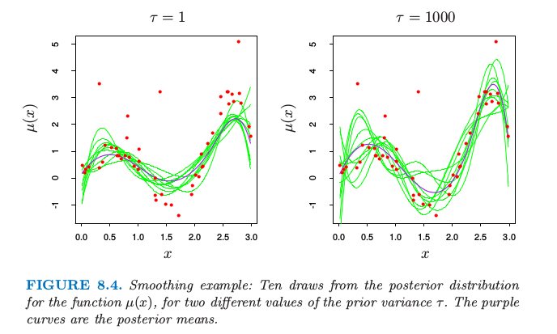
可以看到, 对于 \tau=1 拟合的曲线更为光滑 (因为我们在光滑性上面强加了更多先验权重). 而 \tao=100 时的曲线更接近 MLE 的结果.
实际上, 当 \tau \rightarrow \infty 时称之为 \theta 的 noninformative prior 无信息先验. 在高斯模型中，极大似然和参数自助法趋向于与对自由参数使用了无信息先验的贝叶斯保持一致．因为在常值先验情况下，后验分布与似然函数成比例，所以这些方法趋向于一致．这种对应也可以推广到非参的情形．其中非参自助法近似于一个无信息先验的贝叶斯分析；8.4 节将详细介绍．
The EM Algorithm¶
可以参考之前统计计算的 note, 思路和 EM算法及其推广 比较像. ESL 的版本 here.
EM 算法是简化复杂极大似然问题的一种很受欢迎的工具．我们首先在一个简单的混合模型中讨论它．
Gaussian Mixture Models (GMM)¶
Mathematical definition
where \sum_{k=1}^{K} \pi_{k}=1 and \pi_{k} \geqslant 0 for k=1, \ldots, K and \theta=\left(\mu_{1}, \ldots, \mu_{K}, \Sigma_{1}, \ldots, \Sigma_{K}, \pi_{1}, \ldots, \pi_{K}\right)
Parameter Estimation for GMM¶
Given n independent training samples x_{1}, x_{2}, \ldots, x_{n} from a GMM, can still use MLE to estimate \theta, but… Assume K is fixed and known, log likelihood of the data is
Let’s try to maximize it
- By eyeballing
- Analytically
- Numerically
The MMAlgorithm - Minimization¶
Majorize-Minimization/Maximization. MM算法是一种迭代优化方法，它利用函数的凸性来找到它们的最大值或最小值。当目标函数难以优化的时候, 转而去找一个容易优化的目标函数替代, 迭代.
例如, 对于最小化问题, 每次迭代找到一个目标函数的上界函数，求上界函数的最小值。
- To minimize an objective function f(\theta)
- The MM algorithm is a prescription for constructing optimization algorithms
- An MM algorithm creates a surrogate 替代 function that majories the objective function.
- When the surrogate function is minimized, the objective function is decreased
- For minimization, M M \equiv majorize
Majorization¶
A function g\left(\theta ; \theta^{(t)}\right) majorizes the function f(\theta) at \theta^{(t)} if
- f\left(\theta^{(t)}\right)=g\left(\theta^{(t)} ; \theta^{(t)}\right)
- f(\theta) \leqslant g\left(\theta ; \theta^{(t)}\right) for all \theta 即替代函数是原函数的上届
If f(\theta) is difficult to minimize, find g\left(\theta ; \theta^{(t)}\right), which is easy to minimize. Let $$ \theta^{(t+1)}=\operatorname{argmin}_{\theta} g\left(\theta ; \theta^{(t)}\right) $$
MM minimization algorithm satisfied the descent property as $$ \begin{aligned} f\left(\theta^{(t+1)}\right) & \leqslant g\left(\theta^{(t+1)} ; \theta^{(t)}\right) \ & \leqslant g\left(\theta^{(t)} ; \theta^{(t)}\right) \ &=f\left(\theta^{(t)}\right) \end{aligned} $$ In summary $$ f\left(\theta^{(t+1)}\right) \leqslant f\left(\theta^{(t)}\right) $$ The descent property makes the MM algorithm very stable algorithms converges to local minima or saddle point
Big Question¶
How do we majorize / minorize a function? Some generic tricks and tools
- Jensen’s inequality
- Chord above the graph property of a convex function
- Supporting hyperplane property of a convex function
- Quadratic upper bound principle
- Arithmetic-geometric mean inequality
- Cauchy-Schwartz inequality
We’ll only focus on Jensen’s inequality here
Jensen’s Inequality¶
You’ve probably minorized via Jensen’s Inequality without noticing it
Remember Jensen’s Inequality [画图很容易理解]
- h(\cdot) be a concave function
- \pi_{1}, \ldots, \pi_{K} be K non-negative numbers, with \sum_{k=1}^{K} \pi_{k}=1
- K arbituary numbers a_{1}, \ldots, a_{K}
Then
Expectation - Maximization¶
EM 算法参见 here. 注意到, 链接中理解 Z 是隐变量(一部分的因变量, 但无法观测.) 「用Y表示观测随机变量的数据，Z表示隐随机变量的数据。Y和Z连在一起称为完全数据，观测数据Y又称为不完全数据。」
除了上面链接中的理解, 这里直接基于 Jenson 不等式
- The EM algorithm is a MM algorithm EM 算法是 MM 算法的一种
- EM uses Jensen’s inequality to minorize the log likelihood
Step 1
Summary of step 1 , we’ve got
Step 2: find f^{(t)}(Z)
The lower bound must touch the \log likelihood at \theta^{(t)}
From this we can calculate f^{(t)}(Z)
The log likelihood is minorized by
Step 3: find \& max g\left(\theta ; \theta^{(t)}\right) What are the Z^{\prime} s and where did they come from?
- Z is a random variable whose pdf conditioned on X is completely determined by \theta
- Choice of Z should make the maximization step easy
Two Component GMM¶
where \Delta=\{0,1\} with \operatorname{Pr}(\Delta=1)=\pi Equivalent two-step representation
- Generate a \Delta with probability \pi
- Depending on the outcome of \Delta, deliver either Y_{1} or Y_{2}
Let \phi_{\theta}(x) denote the normal density with parameter \theta=\left(\mu, \sigma^{2}\right), then the density of Y is
where \theta=\left(\pi, \theta_{1}, \theta_{2}\right)=\left(\pi, \mu_{1}, \sigma_{1}^{2}, \mu_{2}, \sigma_{2}^{2}\right)
The log likelihood of the data
Introduce latent variables \Delta_{i} taking values 0 or 1
- If \Delta_{i}=1, Y_{i} comes from model 2
- Otherwise it comes from model 1
Suppose we know the values of \Delta_{i}, the log likelihood can be written
- The MLE of \mu_{1} and \sigma_{1}^{2} would be the sample mean and variance for those data with \Delta_{i}=0
- The MLE of \mu_{2} and \sigma_{2}^{2} would be the sample mean and variance for those data with \Delta_{i}=1
- The MLE of \pi would be the proportion of \Delta_{i}=1
However, \Delta_{i} are unknown, and we substibute with its expected value
- \gamma_{i} is called responsibility of model 2 for observation i
- posteior of the probability that observation i belongs to model 2 given the data and current estimate
For each iteration....
Expectation step
- soft assignment of each observation to each model
- the current parameter estimates are used to assign responsibilities according to the relative density of the training points under each model
Maximization step
- these responsibilities are used in weighted maximum-likelihood fits to update the parameter estimates
EM Algorithm for Two-component GMM¶
- Take initial guesses for the parameters \left(\mu_{1}, \sigma_{1}^{2}, \mu_{2}, \sigma_{2}^{2}, \pi\right)
- Expectation Step: compute the responsibilities
- Maximization Step: compute the weighted means and variances and the mixing probability
- Iterate steps 2 and 3 until convergence
MCMC - Sampling from Posterior¶
在定义了一个贝叶斯模型后，有人便想要从得到的后验分布中采样来对参数进行推断．除了简单的模型，这通常是一个很困难的计算问题．参见 here 的注释.
这节我们讨论用于后验采样的 马尔科夫蒙特卡洛法 (Markov chain Monte Carlo)．我们将要看到吉布斯采样（一个 MCMC 过程）与 EM 算法非常相关：主要的区别在于前者从条件分布中采样而非对它们最大化．
Markov Chain Monte Carlo Method¶
Aim
- Generate independent samples \left\{x^{(r)}\right\}_{r=1}^{R} from a pdf p(x)
- Can then use x^{(r)} to estimate expectations of functions under this distribution
Not an easy task
- Sampling from p(x) is hard in general
- Especially when x \in \mathbb{R}^{p} and p is large
Common approach
- Monte Carlo Markov Chain methods such as Metropolis-Hastings and Gibbs sampling
MCMC Assumptions 基本思路就是, 找到一个和 p 比较像的分布来近似.
- Want to draw samples from p(x)
- Can evaluate p(x) within a normalization factor
- That is, can evaluate a function p^{*}(x) such that
$$ p(x)=\frac{p^{*}(x)}{Z} $$ where Z is a constant
The Metropolis-Hastings Method¶
Initially
- Have an initial state x^{(1)}
- Define a proposal density Q\left(x^{\prime} ; x^{(t)}\right) depending on the current state x^{(t)}
- Must be able to draw samples from Q\left(x^{\prime} ; x^{(t)}\right)
At each iteration
- A tentative new state x^{\prime} is generated from the proposal density Q\left(x^{\prime} ; x^{(t)}\right)
- Compute
- Accept new state x^{\prime} with probability a
- Set
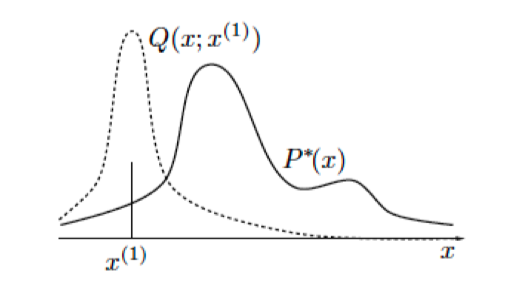
Convergence
- For any Q s.t. Q\left(x^{\prime} ; x\right)>0 \forall x, x^{\prime} as t \rightarrow \infty
- The probability distribution of x^{(t)} tends to p(x)=p^{*}(x) / Z
Gibbs Sampling¶
Given a state x^{(t)} \in \mathbb{R}^{p}, generate a new state with
where it is assumed that we can generate samples from p\left(x_{i} \mid\left\{x_{j}\right\}_{j \neq i}\right) Convergence
- Gibbs sampling is a Metropolis method
- The probability distribution of x^{(t)} tends to p(x) as t \rightarrow \infty, as long as p(x) does not have pathological properties
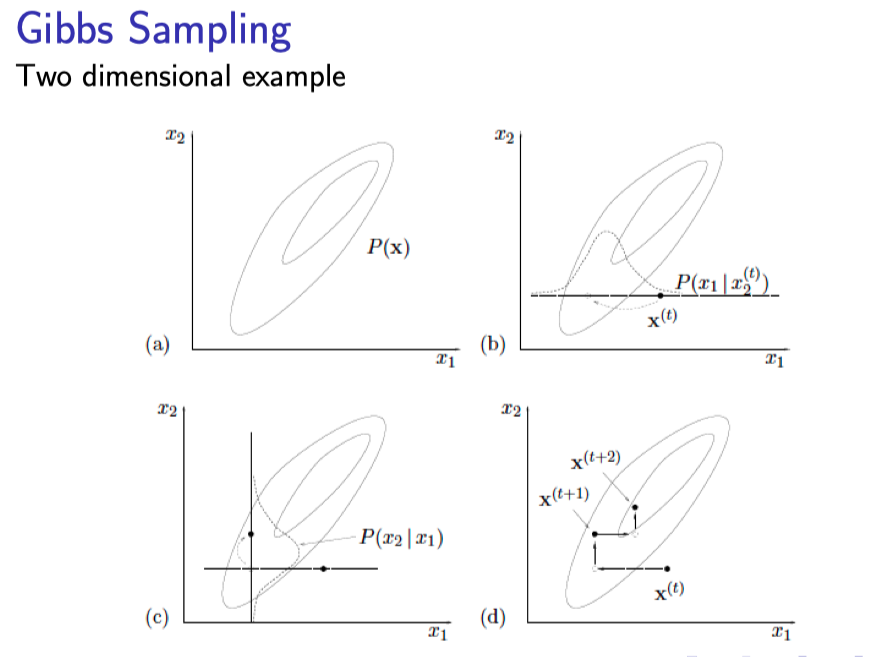
Evolution of Markov Chain¶
Markov chain defined by an initial p^{(0)}(x) and a transition probability T\left(x^{\prime} ; x\right)
Let p^{(t)}(x) be the pdf of the state after t applications of the Markov chain
The pdf of the state at the (t+1)_{t h} iteration of the Markov Chain is given by
Want to find a chain s.t. as t \rightarrow \infty then p^{(t)}(x) \rightarrow p(x)
When designing a MCMC method, construct a chain with the following properties
- p(x) is an invariant distribution of the chain
- The chain is ergodic
Gibbs Sampling for GMM¶
Close connection between Gibbs sampling and the EM algorithm in exponential family models
Let
- the parameter \theta of the distribution
- latent / missing data Z^{m}
be parameter for Gibbs sampler
To estimate the parameter of a GMM at each iteration
where \Delta_{i} \in\{1, \ldots, K\} represents which component training example i is assigned to
Bagging¶
本节中提到了随机森林和 boosting 方式．ISLR 在讲基于树的方法时是将这两种方式与 bagging 一起介绍的. 简单来说，bagging 和随机森林都是针对 bootstrap 样本，且前者可以看成后者的特殊形式；而 boosting 是针对残差样本．
Starting point
- Training set Z=\left\{\left(x_{1}, y_{1}\right), \ldots,\left(x_{n}, y_{n}\right)\right\}
- \hat{f}(x) be the prediction at input x learned from Z
Goal
- Obtain a prediction at input x with lower variance than \hat{f}(x)
How - Bootstrap aggregation a.k.a. Bagging
- Obtain bootstrap samples Z^{*1}, \ldots, Z^{* B}
- For each Z^{*b}, fit the model and get prediction \hat{f}^{* b}(x)
- The bagged estimate is then
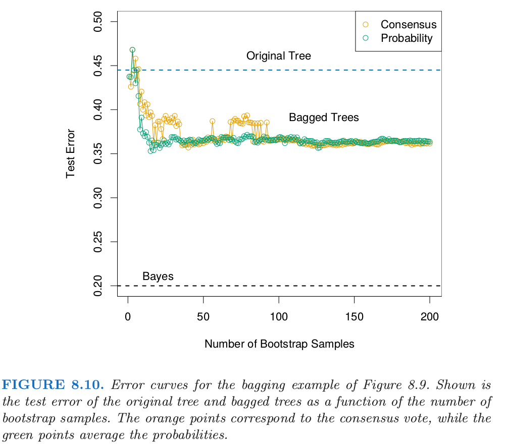
上面的橙色是对于分类结果进行 bagging, 绿色是对于分类概率进行 bagging.
Bagging for Classification and 0-1 Loss¶
Squared error loss
- Bagging can dramatically reduce the variance of unstable procedures, leading to improved prediction
Classification with 0-1 loss [因为偏差和方差的不可加性]
- Bagging a good classifier can make it better
- Bagging a bad classifier can make things worse
- Can understand the bagging effect in terms of a consensus of independent weak learners or the wisdom of crowds
Model Averaging & Stacking¶
Bayesian Model Averaging¶
Starting point
- Training data X=\left\{\left(x_{1}, y_{1}\right), \ldots,\left(x_{n}, y_{n}\right)\right\}
- A set of candidate models M_{1}, \ldots, M_{M}
Goal
- Estimate quantity \zeta - usually a prediction of f(x) at x
A Bayesian solution
- The posterior distribution of \zeta
- Posterior mean
关键是估计单个模型的概率
Committee method 委员会方法对每个模型赋予相同的权重
BIC approach (7.7节)
Hardcore Bayesian 全贝叶斯方法. [然而，相比更简单的 BIC 近似，我们没有看到任何实际的证据来表明值得这样做]
Frequentist Model Averaging¶
Starting point
- Predictions \hat{f}_{1}(x), \hat{f}_{2}(x), \ldots, \hat{f}_{M}(x)
Goal
- For squared error loss, find weights \omega=\left(\omega_{1}, \ldots, \omega_{M}\right) s.t.
Solution: population linear regression of Y on \hat{F}(x) 总体线性回归 (population linear regression)
where \hat{F}(x) \equiv\left[\hat{f}_{1}(x), \ldots, \hat{f}_{M}(x)\right]^{\top}
For this \hat{\omega}, the full regression model has smaller error than any single model
Combining models never makes things worse (at population level)
But cannot estimate the population \hat{\omega}. Any thoughts?
显然无法直接计算 population 级别的线性回归, 而直接用训练集会有问题, 例如线性回归的几个模型中, 所选变量最多的模型表现最好, 则 bagging 学习到的权重, 复杂模型的权重会过分高(=1). 因此, 下面的 堆栈泛化 (Stacked generalization) 或 stacking 方法, 采用类似留一的思路, 留出一个 sample 进行训练.
Stacked Generalization (stacking)¶
Denote \hat{f}_{m}^{-i}(x) as the prediction at x using
- the m_{\text {th }} model
- learnt from the dataset with i_{t h} training example removed
Then the stacking weights are given by
The final prediction at point x is
- Better results by forcing \hat{\omega}_{m}^{s t} to be \geqslant 0 and sum to 1
- Stacking and model selection via leave-one-out cross-validation are closely related
- Can apply stacking to other non-linear methods to combine predictions from different models
Stochastic Search: Bumping¶
这章描述的最后一个方法不涉及平均或者结合模型，但是是寻找一个更好单模型的方法．Bumping 采用 bootstrap 采样在模型空间中随机移动．对于拟合方法经常会找到许多局部最小值的问题，bumping 可以帮助这些方法避免陷入坏的解．
General Approach
- Draw bootstrap samples Z^{*1}, \ldots, Z^{* B}
- For b=1, \ldots,, B Fit the model to Z^{*b} giving \hat{f}^{* b}(x)
- Choose the model obtained from bootstrap sample \hat{b} which minimizes the training error
The model predictions are then \hat{f}^{* \hat{b}}(x)
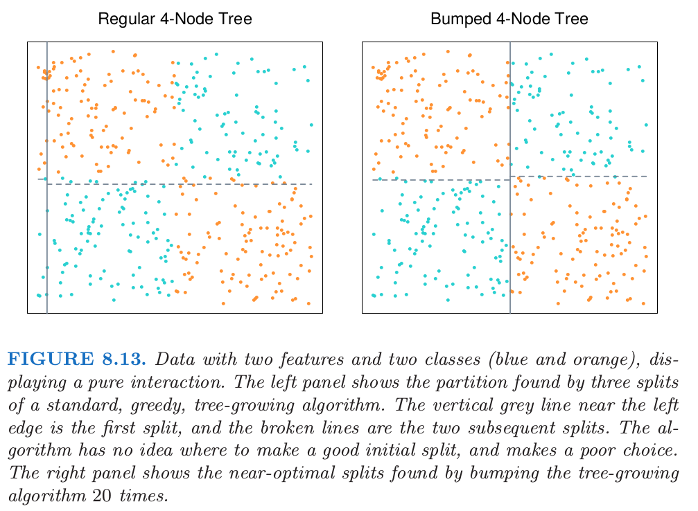
例如, 对于异或(exclusive or)(XOR) 问题而言, 由于数据平衡的特性, 贪心的 CART 算法在两个特征上都无法找到合适的分割 (分割的结果是可能随机的), 因此如左图无法得到一个好的结果. 而在 bumping 算法中, 通过每次随机采样一系列的点, 打破了数据的平衡, (然后根据测试结果找最好的模型), 从右图可以看到, 一个 bumping 20次的模型即可得到一个很好的结果.
- Bumping pertubs the training data
- Therefore explore different areas of the model space
- Must ensure the complexity of each model fit is comparable
Additive Models, Trees, & Related Methods¶
这章中我们开始对监督学习中一些特定的方法进行讨论．这里每个技巧都假设了 未知回归函数（不同的）结构形式，而且通过这样处理巧妙地解决了维数灾难． 当然，它们要为错误地确定模型类型付出可能的代价，所以在每种情形下都需要 做出一个权衡．第 3-6 章留下的问题都将继续讨论．我们描述 5 个相关的技巧： 广义可加模型 (generalized addiƟve models)，树 (trees)，多元自适应回归样条 (MARS)，耐心规则归纳法 (PRIM)，以及 混合层次专家 (HME)．
- Generalized Additive Models
- Tree Based Methods
- Patient Rule Induction Method (PRIM)
- Multivariate Adaptive Regression Splines - MARS
- Hierarchical Mixture of Experts
Generalized Additive Models¶
回归模型在许多数据分析中起着重要的作用，提供了预测和分类的规则、以及理 解不同输入变量重要性的数据分析工具．
尽管非常简单，但是传统的线性模型经常在这些情形下失效：实际生活中，变量的影响往往不是线性的．在前面的章节中我们讨论使用预定义的基函数来实现非 线性的技巧．这部分描述更多 自动灵活 (automatic flexible) 的统计方法来识别和 表征非线性回归的影响．这些方法被称为“广义可加模型”．
A generalized additive model has the form
where each f_{j}{ }^{\prime} s are smooth, potentially non-parametric functions
Here we consider each f_{j} is fit using a scatter plot smoother
- cubic smoothing spline
- kernel smoother
进一步定义对于二分类任务 Definition for Binary Classification
A generalized additive model has the form
where g(\cdot) is a link function.
Common link functions are
- Identity: g(z)=z
- used for linear and additive models for Gaussian response data
- 高斯响应数据
- Logit: g(z)=\log \frac{z}{1-z}
- 我们通过一个线性回归模型和 logit 链接函数将预测变量与二进制响应变量关联起来
- used for model binomial probabilities
- Log: g(z)=\log (z)
- used for log-linear or log-additive models for possion count data
- 泊松计数数据
上面的三种情形都是来自指数族采样模型，另外也包括 Gamma 分布和负二项分布．这个分布族产生了著名的广义线性模型类，它们都是以同样的方式扩展为广义可加模型．
Advantages of GAM
- If f_{j}^{\prime} s are estimated in a flexible way, can reveal non-linear relationship between input X_{j} and Y
- Efficient algorithms to fit them if p is not too large
Fitting GAM¶
Additive model [类似 5.4 节中讨论的惩罚平方和的 (5.9) 准则]
where E(\epsilon)=0
How to estimate the parameters?
- Training data \left\{\left(x_{i}, y_{i}\right)\right\}_{i=1}^{n}
- Minimize a penalized sum-of-squares
where each \lambda_{j} \geqslant 0
One solution
- Let each f_{j}\left(X_{j}\right) be a cubic smoothing spline with knots at x_{i j} and response y_{i} for i=1, \ldots, n [可以证明上式的最小值是「可加三次样条模型」, 即分别对于每个组分 X_j 进行拟合 f_j 三次样条]
- This solution minimizes P R S S\left(\alpha, f_{1}, f_{2}, \ldots, f_{n}\right)
- However, it is not the only minimizer as \alpha is not identifiable
但在没有约束的情况下, 解不唯一, 因此规定每个组分 f_j 拟合的均值为 0. 此时, 当输入矩阵列满秩, 上式有唯一解.
To combat this, assume
This assumption yields \hat{\alpha}=\operatorname{ave}\left(y_{i}\right)
If the data matrix
has full column rank, \operatorname{PRSS}\left(\alpha, f_{1}, f_{2}, \ldots, f_{n}\right) is convex and the minimizer is unique.
\exists a simple iterative procedure for finding this solution
Backfitting Algorithm¶
根据上面的定理可以得到如下拟合算法
Step 1: Initialize
Step 2: Cycle until convergence j=1,2, \ldots, p, 1,2, \ldots, p, 1,2, \ldots
where S_{j}\left[\left\{y_{i}-\hat{\alpha}-\sum_{k \neq j} \hat{f}_{k}\left(x_{i k}\right)\right\}_{i=1}^{n}\right] denotes the cubic smoothing spine with knots at x_{i j} and responses y_{i}-\hat{\alpha}-\sum_{k \neq j} \hat{f}_{k}\left(x_{i k}\right) for i=1, \ldots, n
Could use other smoothing operators for S_{j}
[实际上, 第 2(2) 步不是必需的，因为光滑样条对 0 均值响应变量拟合均值为 0. 但机器舍入误差会导致下降，所以建议进行调整.]
Example: Additive Logistic Regression¶
Generalized Additive Logistic Model
Functions f_{1}, \ldots, f_{p} estimated by a backfitting algorithm within a Newton-Rapson procedure
Goal: maximize the log-likelihood
where P\left(Y=1 \mid x_{i}\right)=\frac{e^{\eta_{i}}}{1+e^{\eta_{i}}} and \eta_{i}=\alpha+f_{1}\left(x_{i 1}\right)+\ldots+f_{p}\left(x_{i p}\right)
How: iteratively perform unitl convergence
- Let each \hat{\eta}_{i}=\hat{\alpha}+\sum \hat{f}_{j}\left(x_{i j}\right) be the estimate of \eta_{i} given the current estimates of the parameters \alpha, f_{1}, \ldots, f_{p}
- Use a Newton-Raphson update step to produce a new estimate, \hat{\eta}_{i}^{n e w}, of \eta_{i} s.t. L_{i}\left(\hat{\eta}_{i}^{n e w}\right) \geqslant L_{i}\left(\hat{\eta}_{i}\right) for each i [因为这里是二值响应变量没有具体的数值响应, 所以用 Newton 方法来生成一个近似的值?]
- Use Backfitting to fit an additive model to the targets \hat{\eta}_{i}^{n e w} \forall i
- This produces new estimates of \hat{\alpha}, \hat{f}_{j} \forall j
GAM - Summary¶
Pros
- Extension of linear models - more flexible but still interpretable
- Parameter estimate via Backfitting method is simple
- Backfitting allows the appropriate fitting method for each input variable 允许对于每个输入变量去选择合适的拟合方法
Cons
- No feature selection is performed
- Backfitting is not feasible for large p
For large p forward stagewise fitting (such as boosting 第10章) can be a solution…
Tree Based Methods¶
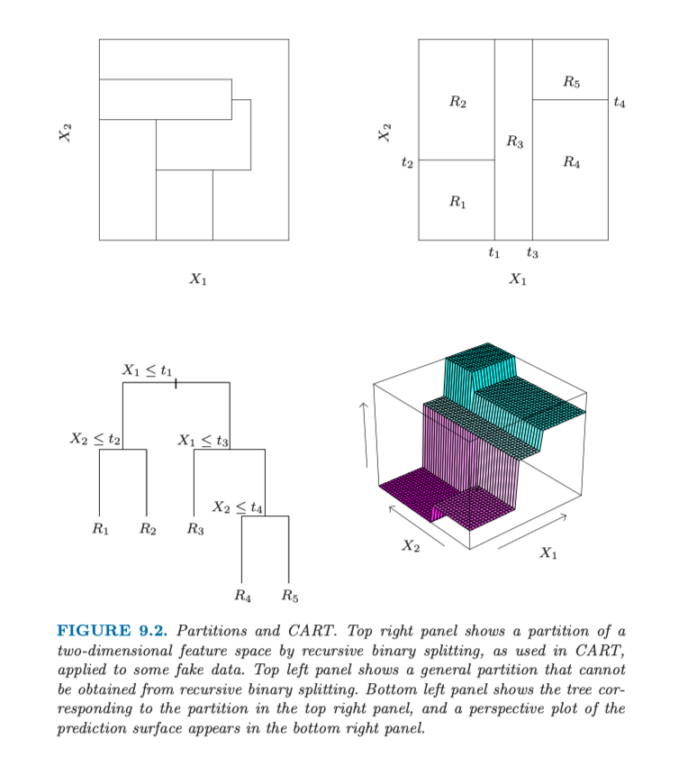
Regression Tree¶
Aim: approximate a regression function f: \mathbb{R}^{p} \rightarrow \mathbb{R} with
with regions R_{1}, \ldots, R_{M} partition \mathbb{R}^{p} and f_{m}: \mathbb{R}^{p} \rightarrow \mathbb{R}
Challenge: (assuming a specific form for f_{m}{ }^{\prime} \mathrm{s} )
- Find M and the regions R_{1}, \ldots, R_{M} s.t. \hat{f} \approx f
- For training data \left(x_{1}, y_{1}\right), \ldots,\left(x_{n}, y_{n}\right) with each x_{i} \in \mathbb{R}^{p}, y_{i} \in \mathbb{R}
Piecewise Constant¶
Let f_{m}(x)=c_{m} such that the regression function becomes
If we know the regions R_{1}, \ldots, R_{M} then to minimize
one would set
也即, 预测为每个 region 上的响应变量均值. 但找出使得平方和最小的最优二分在计算上一般是不可行的．因此我们采用一种贪婪算法.
Finding the Optimal Partition¶
First step of the greedy approach
- Let: R_{1}(j, s)=\left\{X \mid X_{j} \leqslant s\right\} and R_{2}(j, s)=\left\{X \mid X_{j}>s\right\}
- Choose (j, s) to minimize
- For a fixed (j, s) the minimum occurs when
- Determination of best pair (j, s) feasible as for each j only have to check \leqslant n+1 values of s
Full Greedy Recursion
- Once the best split (j, s) is found 1. Partition the data X
based on the two resulting region 2. Repeat the splitting process on both X_{1} and X_{2}
- The process above is recursively repeated on all the resulting subset of data points X_{i} until \left|X_{i}\right| is too small
- The best splits found in this recursive are recoded in a binary tree
Growing a Tree Recursively
How large should the tree be?
- Very large trees may over fit the data
- Small tree may not capture the structure in the data
树太大会过拟合数据，而树太小则可能捕捉不了重要的结构. 另外, 上面的看似无用的分割或许会导致下面得到很好的分割. 更好的策略是生成一个大树 T_0，只有当达到最小结点规模（比如 5）才停止分割过程．接着大树采用 成本复杂度剪枝 (cost-complexity pruning) 来调整
Common solution
- Grow a large tree T_{0}
- Prune T_{0} using cost-complexity pruning
Cost-complexity pruning¶
- Pruning T_{0} corresponds to collapsing any number of its internal nodes
- Let T_{T} contain the indices of the terminal nodes in tree T
- Define
where
- For a given \alpha, find the subtree T_{\alpha} \subseteq T that minimizes C_{\alpha}(T)
How 怎么自适应地选择 \alpha? - weakest link pruning 最差连接剪枝
- Successively collapse the internal node that produces the smallest per-node increase in
until left with a one node tree
- This sequence of collapsed trees contains T_{\alpha}
Classification Tree¶
Definitions needed for node impurity measures
- In node m, representing a region R_{m} with n_{m} observations
where \hat{p}_{m k} is the proportion of class k observations in node m
- Classify the observation in node m to class k(m)=\operatorname{argmax}_{k} \hat{p}_{m k} the majority vote in node m
如何衡量节点的不纯度? Different measures of node impurity
- Misclassification error
- Gini index
- Cross-entropy or deviance
在二分类任务上比较这几个指标. For binary classification, let p=\hat{p}_{m 0}
- Misclassification error: 1-\max (p, 1-p)
- Gini index: 2 p(1-p)
- Cross-entropy or deviance: -p \log p-(1-p) \log (1-p)
比较
- [注意到图中交叉熵进行了缩小使其经过同一点.]
- 这三者都类似，但是 交叉熵 (cross-entropy) 和 基尼指数 (Gini index) 是可微的，因此更加适合数值优化.
- 另外，交叉熵和基尼指数比误分类率对结点概率的改变更加敏感
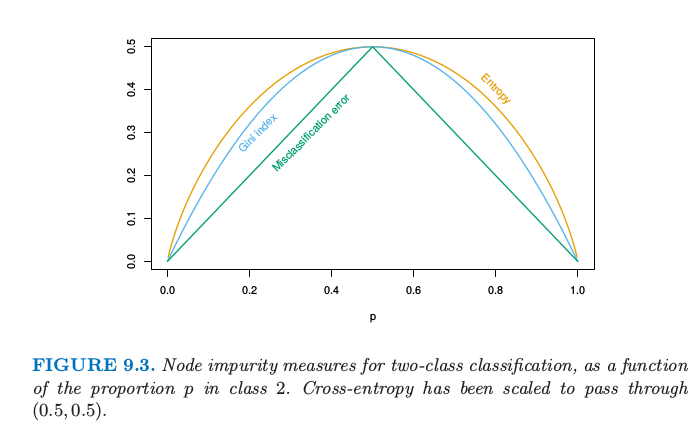
- Cost of binary split of node m into nodes m_{1} and m_{2} is
where Q_{m 1} is the impurity measure of node m_{1}, similarly for Q_{m 2}
- Cross-entropy and Gini are more sensitive to changes in the node probabilities than Misclassification rate
- Cross-entropy and Gini measures used to grow the trees (分割节点的过程中多用 交叉熵或Gini)
- All measures used to prune tree
Problems with Trees¶
- Instability
- Tress have high variance due to hierarchical search process
- Errors at top nodes propogate to lower ones
- Small change in training data can give very different splits
- Lack of smoothness
- Regression trees response surface not smooth
- Hit problems when underlying function is smooth
- Difficulty in capturing additive structures 对加性结构建模的困难
- The binary tree structure precludes the discovery of additive structure like Y=c_{1} I\left(X_{1}<t_{1}\right)+c_{2} I\left(X_{2}<t_{2}\right)+\epsilon
- 例如, 在回归问题中, 假设 Y=c_{1} I\left(X_{1}<t_{1}\right)+c_{2} I\left(X_{2}<t_{2}\right)+\varepsilon, 其中 \varepsilon 是 0 均值噪声. 则二叉树会在 t_{1} 附近对 X_{1} 做第 一次分割. 为了捕捉加性结构, 下一层两个结点都需要在 t_{2} 处对 X_{2} 分割. 在充足数据情况下这 个或许可以发生, 但是这个模型没有给予特别鼓励来找到这一结构. 如果有 10 个而不是 2 个加性 影响, 需要花费很多偶然的分割来重造这个结构, 并且在估计的树中, 通过数据分析来识别它会变 得非常困难. 原因再一次可以归结为二叉树的结构, 既有优点也有不足. 为了捕捉加性结构, MARS 方法 (9.4 节) 再一次放弃树的结构.
Patient Rule Induction Method (PRIM)¶
基于树的方法（用于回归）将特征空间分成盒状的区域，来试图使每个盒子中的响应变量尽可能不同．通过二叉树定义了与每个盒子相关的分割规则，这有利于它们的解释性．
耐心规则归纳法 (PRIM) 也在特征空间中找盒子，但是它是寻找具有高平均响应的盒子．因此它是在寻找目标函数的最大值，称为bump hunting．（如果需要最小值而非最大值，可以简单地用负的响应变量值来转化．）
PRIM¶
Aim
- Locate maximum in the response function
How: find a rectangular box in the feature space which contains
- for classification: a clump of points of maximal purity
- for regression: a plateau of high scoring points
PRIM - a greedy search which is more patient than CART
PRIM - Algorithm¶
PRIM 的思想是从不同的变量维度去缩减 box 的大小, 尽量使得盒子中响应变量尽可能大 (所以也叫 Bump Hunting). 缩减的方式叫做 Peeling 见下; 另外为了模型的健壮性, 最后也会扩展盒子, 叫做 Pasting. 相关定义如下
- Box B is defined by the set of inequalities
where p is the dimension of the feature vectors
- B^{\prime}=\operatorname{NewBox}(B, k, 0, a) is defined by the inequalities
- B^{\prime}=\operatorname{NewBox}(B, k, 1, b) is defined by the inequalities
- Let n_{B}=\# of training observations in box B
缩减方式的具体定义如下, 即每次从所有可能的维度收缩, 要求盒子中减少的数据量刚好为 \alpha, 这里的 \alpha 一般可取 0.05 或 0.1 (扩展的方式类似, 每次扩展 \alpha 个数据点, 这里不展示了.)
Peeling - Decrease the size of box B for one face
- Define B^{\prime}=\operatorname{Peel}(B, k, 0, \alpha) to be the box
where a is the smallest scalar for \alpha \in(0,1) s.t.
- Define B^{\prime}=\operatorname{Peel}(B, k, 1, \alpha) to be the box
where b is the largest scalar for \alpha \in(0,1) s.t. b<b_{k} and n_{B^{\prime}} \leqslant(1-\alpha) n_{B}
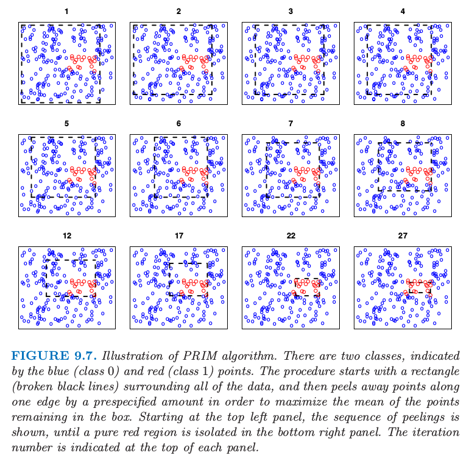
找盒子的总体流程可规范地写为
- Set i=0 and let \alpha \in(0,1)
- Let B_{0} be the minimal box containing all the data
- Peeling process: find sequence of decreasing nested boxes while (number of observations in B_{i} \geqslant n_{m} ) - Compute the trimmed boxes C_{k}=P e e l\left(B_{i}, k, 0, \alpha\right) and C_{k+p}=\operatorname{Peel}\left(B_{i}, k, 1, \alpha\right) for k=1, \ldots, p - Choose the C_{j *} with highest response mean [从每一个维度尝试搜索, 选择得到的盒子中响应量最高的那一个] - Set B_{i+1}=C_{j *} - Set i=i+1
- Pasting process: find sequence of increasing nested boxed For k=1, \ldots, p - C=\operatorname{ExpandBox}\left(B_{i}, k, 0, \alpha\right), D=\operatorname{ExpandBox}\left(B_{i}, k, 1, \alpha\right) - Set B_{i+1}=C and i=i+1 if S_{C}>S_{B_{i}} and S_{C}>S_{D} - Set B_{i+1}=D and i=i+1 if S_{C}>S_{B_{i}} and S_{D}>S_{C}
上面仅仅是找到了一个盒子, 整体流程为
- Previous steps produces a sequence of boxes B_{1}, \ldots, B_{i}
- Use cross-validation to choose best box - call this box B
- Remove the data in box B from the dataset
- Repeat the peeling and pasting steps and the cross-validation step to obtain a second box
- Continue these last two steps to get as many boxes as desired
PRIM 与 CART 相比的优点是它的 耐心 (patience). 因为 CART 的二值分割快速地将数据分割开. 假设等大小的分割, 有 N 个观测情况下, 在使用完数据之前, 只能进行 \log _{2}(N)-1 次分割. 如 果 PRIM 在每一步剔除掉训练点的比例为 \alpha, 则在用完数据之前大约需要 -\log (N) / \log (1-\alpha) 次 晹除步骤. 举个例子, 如果 N=128, \alpha=0.10, 则 \log_{2}(N)-1=6, 而 -\log (N) / \log (1-\alpha) \approx 46. 考虑每一步需要整数个的观测, PRIM 实际上可以剔除 29 次. 在任 何情形下, PRIM 的能力更加耐心, 这应该帮助自上而下的贪婪算法找到更好的解.
Multivariate Adaptive Regression Splines (MARS)¶
多变量自适应回归样条 (Multivariate Adaptive Regression Splines, MARS) 是回归的自适应过程(an adaptive procedure for regression)，非常适合高维问题（即，存在大量的输入）．可以从两个角度来理解它，首先，它可以看成是逐步线性回归 (stepwise linear regression)的推广，其次，也可以看成是为了提高 CART 在回归中的效果而进行的改进．我们从第一种观点引入 MARS，接着与 CART 联系起来．
首先定义 expansions in piecewise linear basis functions \left(x-t\right)_{+} 和 \left(t-x\right)_{+}, 函数图像如下:
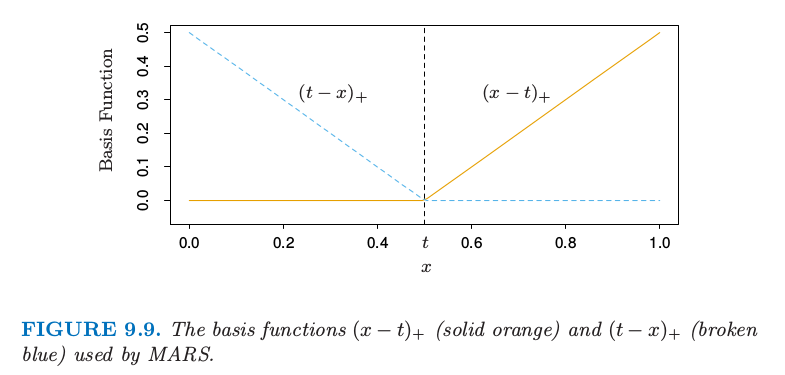
MARS - Basis Functions
- Training data \left(x_{1},, y_{1}\right), \ldots,\left(x_{n}, y_{n}\right) with y_{i} \in \mathbb{R} and x_{i}=\left(x_{i 1}, x_{i 2}, \ldots, x_{i p}\right)^{\top} \in \mathbb{R}^{p}
- For an input vector X \in \mathbb{R}^{p} define
- Then define a collection of basis functions
根据上面的定义, 可以最多可能有 Np 个基函数. 然后基于这组基函数进行拟合 (注意下面的 g\left(X, \alpha_{m}\right) 是 C 中多个基函数的乘积.)
Estimate the regression function using functions from C and product of functions from C
where each \alpha_{m}=\left(n_{m}, b_{1}, j_{1}, i_{1}, \ldots, b_{n m}, j_{n m}, i_{n m}\right) with b_{k} \in\{0,1\} s.t.
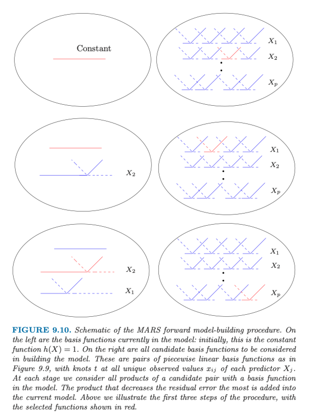
具体的筛选算法如下, 上图为直观的展示.
Initially
- Set g\left(X, \alpha_{0}\right) \equiv 1 and M=\left\{g\left(X, \alpha_{0}\right)\right\}
While |M|<N perform the following
- for each (m, j, i) \in\{1, \ldots,|M|\} \times\{1, \ldots, p\} \times\{1, \ldots, n\} 1. Augment functions in M-g\left(X, \alpha_{0}\right), \ldots, g\left(X, \alpha_{|M|}\right) with 将模型集合中现有的所有函数和 C 中所有基函数乘积作为组合 (注意每次加入的都是一个反射对) g\left(X, \alpha_{m}\right) \cdot h_{0}(X, j, i) \text { and } g\left(X, \alpha_{m}\right) \cdot h_{1}(X, j, i) 2. Use standard linear regression o estimate the \hat{\beta}_{1} ‘s s.t. \begin{gathered} f_{t r y}(X)=\sum_{l=0}^{|M|} \hat{\beta}_{I} g\left(X, \alpha_{l}\right)+\hat{\beta}_{|M|+1} g\left(X, \alpha_{m}\right) \cdot h_{0}(X, j, i)+ \hat{\beta}_{|M|+2} g\left(X, \alpha_{m}\right) \cdot h_{1}(X, j, i) \end{gathered} 3. Compute and record training error of f_{\text {try }}(X)
- Let \left(m^{*}\right), j^{*}, i^{*} be triplet producing lowest training error
- Add g\left(X, \alpha_{m^{*}}\right) \cdot h_{0}\left(X, j^{*}, i^{*}\right) and g\left(X, \alpha_{m^{*}}\right) \cdot h_{1}\left(X, j^{*}, i^{*}\right) to M
Piecewise Linear \& Forward Model Building¶
They can operate locally - the product is only non-zero where all individual components are non-zero
- Locality \rightarrow forward model building strategy can
- build up the regression surface parsimoniously (吝啬地)
- use parameters only when needed, which is very important for high dimensional data
- 「This is important, since one should “spend” parameters carefully in high dimensions, as they can run out quickly.」
- Computational reasons - innermost loop of model building can be made very efficient
- Hierarchical search avoids unnecessary complicated terms 注意到一个 4 阶的交叉项要出现在模型中, 则其中一定有一个 3 阶交叉相在原本的模型中 (避免了在可行选择数目呈指数增长的空间中的搜索)
MARS V.S CART¶
If MARS procedure is amended s.t.
- Set h_{0}(X, j, i)=I\left(X_{j}-x_{i j}>0\right) \leftarrow step function
- Set h_{1}(X, j, i)=I\left(X_{j}-x_{i j} \leqslant 0\right) \leftarrow step function (用阶跃函数替代分段线性基函数)
- When g \in M is chosen at one iteration s.t.
remove g from M 当模型中的项与候选项相乘，替换成交叉项，因此不允许该项与其它候选项进行交叉．
Then, MARS forward procedure == CART tree-growing algorithm
乘上一对反射阶跃函数等价于在阶跃点分割开．第二条限制表明一个结点可能不会被分割成多次，因此使得 CART 模型能用（吸引人的）二叉树表示．另一方面，也是这条限制使得 CART 很难对加性结构进行建模．MARS 放弃树结构并且得到捕捉加性影响的能力．
Hierarchical Mixture of Experts (HME)¶
专家的分层混合 (HME) 过程可以看成是基于树方法的变种．主要的差异是树的分割不是硬决定 (hard decision)，而是软概率的决定 (soft probabilistic)．在每个结点观测往左或者往右的概率取决于输入值．因为最后的参数优化问题是光滑的，所以有一些计算的优势，不像在基于树的方式中的离散分割点的搜索．软分割或许也可以帮助预测准确性，并且提供另外一种有用的数据描述方式．
HMEs 和 CART 树的实现还有其他的差异．在HME中，在每个终止结点处拟合线性（或者逻辑斯蒂回归）模型，而不是像 CART 中那样是常值．分割点可以是多重的，而不仅仅是二值的，并且分割点是输入的线性组合的概率函数，而不是在标准 CART 中的单个输入．然而，这些选择的相对优点不是清晰的，大部分将在 9.2 节的后面中讨论．
简单的 2 层 HME 模型如图 9.13 所示．可以认为是在每个非终止结点处进行软分割的树．然而，这种方法的发明者采用不同的术语．终止结点称为专家 (experts)，非终止结点称为门控网络 (gating networks)．想法是，每个专家对响应变量提供一个看法（预测），并且通过门控网络将这些“看法”结合在一起．正如我们所见，这个模型形式上是混合模型，并且图中的两层模型可以推广为多层，因此有了称为专家的分层混合 (hierarchical mixtures of experts)
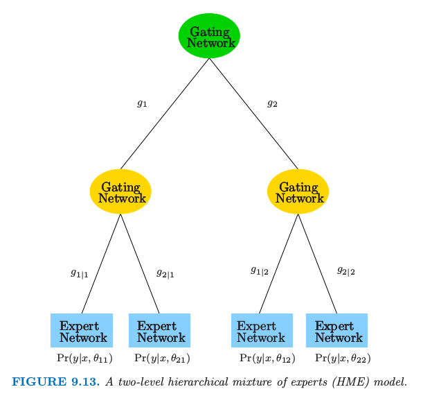
顶层的门控网络有输出
其中每个 \gamma_{j} 是末知参数向量. 这表示软的 K 重分割（图 9.13 中 K=2 ）每个 g_{j}\left(x, \gamma_{j}\right) 是将特征 向量为 x 的观测赋给第 j 个分支. 注意到 K=2 时, 如果我们将 x 的某一个元素的系数取为 +\infty , 接着我们得到无穷大的斜率的逻辑斯蒂曲线. 在这种情形下, 门的概率取 0 或 1 , 对应在该输入 下的硬分割.
在第二层, 门控网络有类似的形式:
这是在给定上一层第 j 个分支的情况下, 赋予第 \ell 分支的概率.
在每个专家（终止结点）, 我们有如下形式的响应变量的模型 (这根据问题而有不同).
- Regression: Gaussian linear regression model P\left(y \mid x, \theta_{j l}\right)=N\left(\beta_{j l}^{\top} x, \sigma_{j l}^{2}\right) where \theta_{j l}=\left(\beta_{j l}, \sigma_{j l}^{2}\right)
- Classification: linear logistic regression model P\left(Y=1 \mid x, \theta_{j l}\right)=\frac{1}{1+e^{-\theta_{j j}^{\top} x}}
HME¶
The HME represents a mixture probability model. 总体模型是一个混合模型，其中混合概率由门控网络模型确定.
The mixture probabilities are determined by the soft splits
where \Psi=\left\{\gamma_{j}, \gamma_{j l}, \theta_{j l}\right\}
Estimate \Psi by maximizing the log-likelihood
采用 EM 算法求解.
Introduce the hidden variables \Delta_{j}^{i} and \Delta_{l \mid j}^{i} to indicate the underlying branch decision
- E-step: Compute posterior probabilities of \Delta_{j}^{i} and \Delta_{/ j j}^{i} given \Psi^{(t)}
- M-step: Compute \Psi^{(t+1)} by maximization of the expected log-likelihood \Psi^{(t+1)}=E_{\Delta \mid X, \Psi^{(t)}} \log L(\Psi \mid \Delta, X)
HME or CART¶
- Advantages of HME over CART
- Smooth final regression function - soft splits allow for smooth transitions from high to low responses
- Easier to optimize parameters - the log likelihood is a smooth function and is amendable to numerical optimization
- Disadtanges of HME over CART
- Tree topology - no good way for HME
- Hard to interpret the model
Boosting & Additive Trees¶
Boosting 是最近 20 年内提出的最有力的学习方法．最初是为了分类问题而设计的，但是我们将在这章中看到，它也可以很好地扩展到回归问题上．Boosting的动机是集合许多弱学习的结果来得到有用的“committee”．从这点看 boosting 与 bagging 以及其他的基于 committee 的方式（8.8 节）类似．然而，我们应该看到这种联系最多是表面上的，boosting 在根本上存在不同．
Boosting Methods¶
Overview of Boosting
- Boosting is a procedure to combine the output of many weak classifiers to produce a powerful committee
- A weak classifier is one whose error rate is only slightly better than random guessing
- Boosting produces a sequence of weak classifier G_{m}(x) for m=1, \ldots, M whose predictions are then combined
through a weighted majority to produce the final prediction
- Each \alpha_{m}>0 is computed by the boosting algorithm and reflects how accurately G_{m} classified the data.
Most Popular Boosting Algorithm
AdaBoost.M1 algorithm of Freund \& Schapire (1997)
- Have training data \left(x_{i}, y_{i}\right), i=1,2, \ldots, n
- Introduce a weight \omega_{i}=\frac{1}{n} for each training example
- for m=1, \ldots, M 1. Let G_{m} be the weak classifier with minimum error $$ e r r_{m}=\sum_{i=1}^{n} \omega_{i} I\left(y_{i} \neq G_{m}\left(x_{i}\right)\right) $$ 2. Set \alpha_{m}=\log \frac{1-e r r_{m}}{e r r_{m}} 3. Set $$ \omega_{i} \leftarrow \omega_{i} e^{\alpha_{m} I\left(y_{i} \neq G_{m}\left(x_{i}\right)\right)} $$ This increases (decreases) \omega_{i} for x_{i} misclassified (correctly classified) by G_{m} 4. Normalize the \omega_{i} ‘s so that they sum to 1
What AdaBoost.MI Does
- As iterations proceed, observations difficult to classify correctly receive more influence
- Each successive classifier is forced to concentrate on training observations missed by previous ones in the sequence
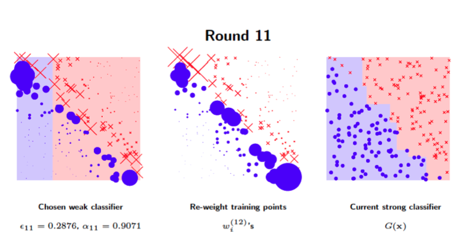
这里给出了一个很直观的例子: 对于一个对角线分割的数据, 采用的基/弱分类器为只能在坐标轴上的划分. 通过调整每个 sample 的权重, 每一轮训练的分类器会越来越关注那些很难被划分的例子, 例如左图中对角线两端的 sample. 调整权重后基于新的 weight 训练得到的分类器如左图所示, 并进一步 reweight 样本, 更新总体的分类模型 G(x).
Now we need to…
- Show AdaBoost fits an additive model in a base learner, optimizing a novel exponential loss function
- Show the population minimizer of the exponential loss function is the log-odds of the class probabilities
- Present loss function that are more robust than squared error or exponential loss
- Argue decision trees are an ideal base learner for data mining applications of boosting
- Develop class of gradient boosted methods (GBMs), for boosting trees with any loss function
- Emphasize the importance of “slow learning”
Boosting Fits an Additive Model¶
Additive Model
Boosting fits an additive expansion in a set of elementary basis functions $$ G(x)=\operatorname{sgn}\left(\sum_{m=1}^{M} \alpha_{m} G_{m}(x)\right) $$ The basis functions are the weak classifiers G_{m}(x) \in\{-1,1\}
More generally, basis functions expansions take the form $$ f(x)=\sum_{m=1}^{M} \beta_{m} b\left(x ; \gamma_{m}\right) $$ where \beta_{m} ‘s are the expansion coefficients and b(x ; \gamma) \in \mathbb{R} are simple functions of the input x parameterized by \gamma
Examples of Additive Models
- Single-hidden-layer neural networks 单层神经网络中（第 11 章）, where $$ b(x ; \gamma)=\frac{1}{1+\exp \left(-\gamma_{0}-\gamma_{1}^{\top} x\right)} $$
- Multivariate adaptive regression splines (MARS) 多元自适应回归样条（9.4 节）: use trucated-power spline basis functions where \gamma parameterizes the variables and values for the knots
- Trees: \gamma parameterizes the split variables and split points at the internal nodes, and the predictions at the terminal nodes
Fitting Additive Models¶
向前逐步加法建模
Typically fit models by minimizing a loss function averaged over the training data $$ \min {\beta, \gamma_{1}, \ldots, \beta_{M}, \gamma_{M}} \sum_{i=1}^{n} L\left(y_{i}, \sum_{m=1}^{M} \beta_{m} b\left(x_{i}, \gamma_{m}\right)\right) $$ For many loss functions L(x, f(X)), basis functions b(x ; \gamma) is hard to decide
Forward Stagewise Additive Modeling
Greedily add one basis function at a time in the following fashion
- Set f_{0}(x)=0
- for m=1, \ldots, M 1. Compute $$ \left(\hat{\beta}{m}, \hat{\gamma}\right)=\operatorname{argmin}{\beta, \gamma_{m}} \sum_{n=1}^{n} L\left(y_{i}, f_{m-1}\left(x_{i}\right)+\beta_{m} b\left(x_{i} ; \gamma_{m}\right)\right) $$ 2. Set $$ f_{m}(x)=f_{m-1}(x)+\hat{\beta}{m} b\left(x ; \hat{\gamma}\right) $$
- Note: Previously added terms are not modified
Exponential Loss & AdaBoost¶
Forward Stagewise Additive Modeling \& Boosting 现在证明 AdaBoost.M1 算法（算法 10.1）等价于使用下列损失函数的向前逐步加法建模 (这里二分类标签为 \{1, -1\})
At each iteration of forward stagewise additive modeling, must solve this optimization problem
where we assume an exponential loss for L and G(x) \in\{-1,1\}
Re-write: The optimization problem becomes
Note
This implies \exp \left\{-y_{i} \beta G\left(x_{i}\right)\right\} is equal to
先来看分类器的优化 Optimization for G_{m}
The optimization problem becomes
Therefore
G_{m} minimizes the weighted error in the AdaBoost algorithm (given \omega_{i}^{(m)} ‘s have the same definition)
再来看权重 Optimization for \beta_{m} Plug G_{m} into the original optimization problem
and using the previous result, it becomes
This quantity is minimized when (求导即可)
where
等价性¶
注意 Update of \omega_{i}^{(m)}
Need the following result
The updated weights can then be written as
比较 Adaboost 和 minimizing exponential loss in the additive model 的更新公式:
- 模型权重
Remember from the AdaBoost algorithm,
where e r r_{m}=\sum_{i=1}^{n} \omega_{i} I\left(y_{i} \neq G_m\left(x_{i}\right)\right) From minimizing exponential loss in the additive model
where e r r_{m}=\frac{\sum_{i=1}^{n} \omega_{i}^{(m)}\left(\left(y_{i} \neq G_{m}\left(x_{i}\right)\right)\right.}{\sum_{i=1}^{n} \omega_{i}^{(m)}}
这里形式上好像差了系数 1/2, 实际上如果所有基模型的权重都缩小一个常数是一样的. (事实上, 李航书中的 Adaboost 模型系数是带 1/2 的.)
- 样本权重
Remember from the AdaBoost algorithm,
where \alpha_{m}=\log \frac{1-e r r_{m}}{e r r_{m}} From minimizing exponential loss in the additive model
where \beta_{m}=\frac{1}{2} \log \frac{1-e r r_{m}}{e r r_{m}} Note: e^{-\beta_{m}} is the same for all observations
总结一下: We can view the AdaBoost.M1 algorithm as a method that approximates minimizing
via a forward stagewise additive modeling approach
from HERE
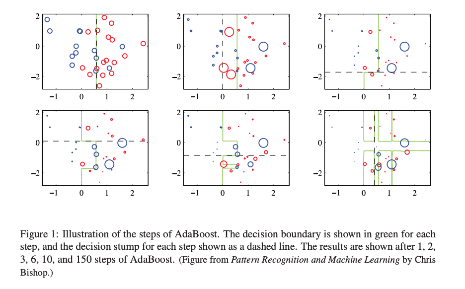
Loss Functions & Robustness¶
这一节我们进一步讨论分类和回归中不同的损失函数，并且用它们对极端数据的鲁棒性来描述．
Loss Functions for Classification¶
- Exponential loss
- Binomial deviance loss 二项偏差
where p(x)=P(Y=1 \mid x)=\frac{1}{1+\exp \{-2 f(x)\}} - Misclassification loss
The Margin
- These loss functions are functions of the “margin” 间隔: y f(X)
- Classification rule G(x)=\operatorname{sign}\{f(X)\} \rightarrow training examples with
- positive margin y_{i} f\left(x_{i}\right)>0 are correctly classified
- negative margin y_{i} f\left(x_{i}\right)<0 are misclassified
- Decision boundary defined by f(x)=0
- Classification algorithms attempt to produce positive margins for each training data point
- Loss criterion for classification should penalize negative margins more heavily than positive margins
尽管指数损失 (10.8) 和二项偏差 (10.18) 当应用到总体的联合分布时会得到同样的解, 但对于有 限的数据集并不一样. 两个准则都是 间隔 (margin) y f(x) 的单调递减函数. 在分类问题中 (响应 变量为 -1 / 1), y f(x) 类似回归中的残差 y-f(x). 分类准则 G(x)=\operatorname{sign}[f(x)] 表明有正间隔 y_{i} f\left(x_{i}\right)>0 的观测被分类正确, 而有负间隔 y_{i} f\left(x_{i}\right)<0 的观测被错误分类. 判别边界定义为 f(x)=0. 分类算法的目标是得到尽可能频繁的正间隔. 任何用于分类的损失标准应该惩罚负间隔 比正间隔更重, 因为正间隔的观测值已经被正确分类.
图 10.4 展示了指数 (10.8) 和二项偏差的标准作为间隔 y \cdot f(x) 的函数的图象. 也显示了误分类损 失 L(y, f(x))=I(y \cdot f(x)<0), 它给出了们间隔的单位惩罚, 而对所有的正值没有惩罚. 指数损 失和二项偏差都可以看成是误分类损失的单调连续近似. 它们不断地惩罚越来越大的负边际值, 衙 罚力度比它们回报越来越大的正边际值更重. 它们的区别在于程度上. 二项偏差的忢罚对于大的增 加的负间隔线性增长, 而指数标准对这样观测的影响指数增长.
在训练过程的任一个时刻，指数标准对具有大的负边际的观测值上有更大的影响．二项偏差相对地在这些观测上影响较小，在所有数据上的影响分散更均匀．也因此在白噪声设定（贝叶斯误差率不接近于0）中更加鲁棒，特别在训练数据中存在误分类标签的情形中．在这些情形下，AdaBoost 的表现从经验上看显著退化．[也即指数损失稳定性较差]
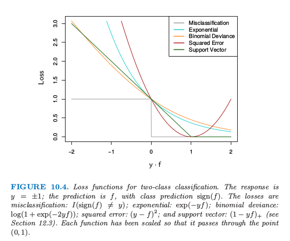
总结一下 指数损失和二项偏差
- Exponential and deviance loss continuous approx to misclassification loss
- They increasingly penalize negative margin values more heavily than they reward positive ones
- Binomial deviance penalty increases linearly with negative margins
- Exponential loss penalty increases exponentially with negative margin
- Exponential criterion concentrates more of its efforts on large negative margin observations than the binomial criterion
- Binomial criterion is far more robust than the exponential criterion in noisy settings
Robust Loss Functions for Regression¶
- Squared error loss
population optimum for this loss function: f(X)=E[Y \mid x] - Absolute loss
population optimum for this loss function: f(x)=\operatorname{median}(Y \mid x) 中位数
两者的关系类似上面分类损失的比较
- On finite samples, squared error loss puts far more emphasis on observations with large | y_{i}-f\left(x_{i}\right) | than absolute loss
- Thus squared error loss is less robust and performance degrades for long-tail error distributions and mis-labellings.
Huber loss
- strong resistance to gross outliers while
- being nearly as efficient as least squares for Gaussian errors
Combine the good properties of squared-error near zero and absolute error loss when |y-f| is large
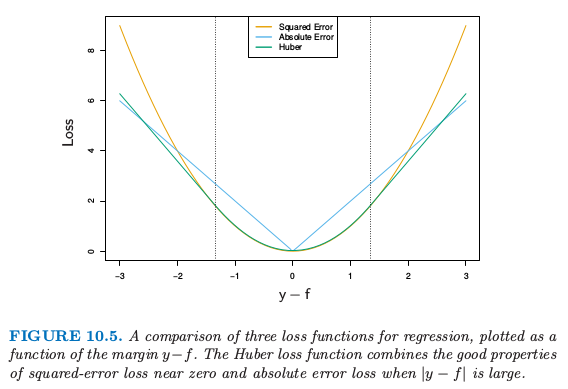
Summary¶
- When robustness is an issue, 1. squared error loss for regression; 2. exponential loss for classification are not the best criterion to be optimizing
- But both loss functions lead to elegant modular boosting algorithms in the context of forward stagewise additive modeling
- For classification: perform a weighted fit of the base learner to the outputs y_{i} with weights \omega_{i}=\exp \left\{ - y_{i} f\left(x_{i}\right)\right\}
- For regression: with squared-error loss one simply fits the base learner to the residuals from the current model y_i− f_{m−1}(x_i) at each step
- More robust criteria in their place do not give rise to such simple feasible boosting algorithms
”Off-the-Shelf” Procedure for Data Mining¶
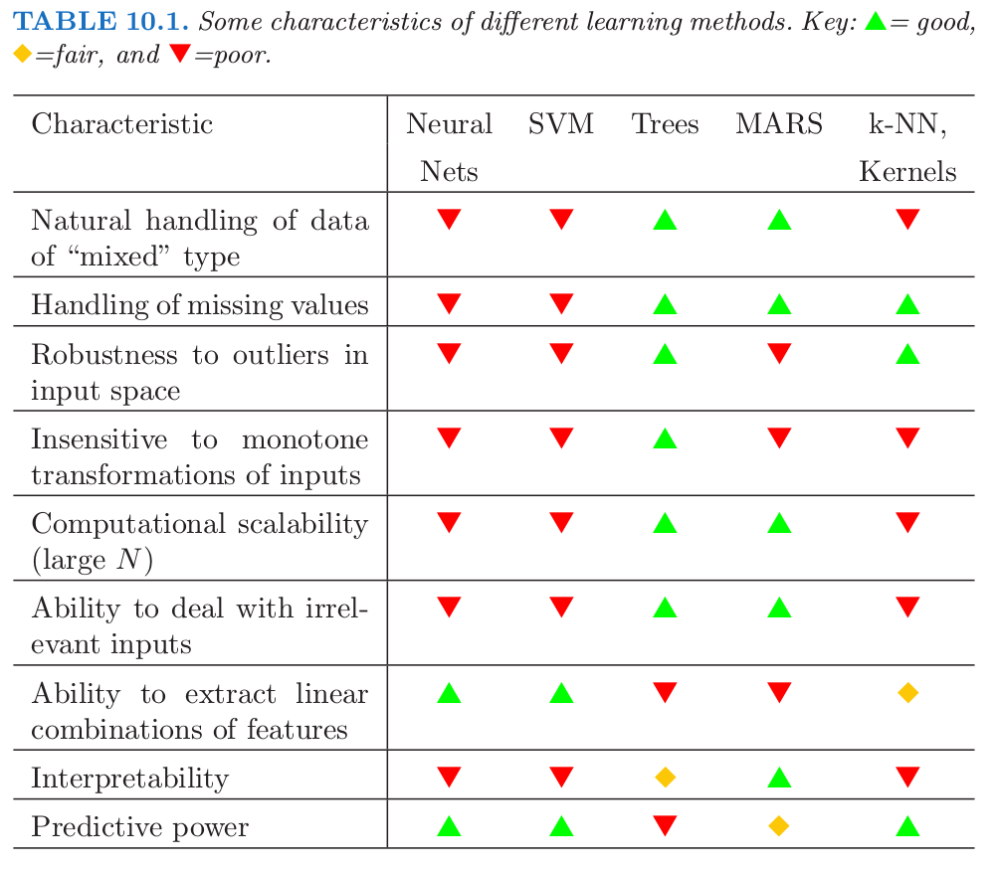
数据挖掘的 “现货”(off-the-shelf) 方法．现货方法指的是可以直接应用到数据中而不需要大量时间进行数据预处理或者学习过程的精心调参．
Trees are great except…
- they are inaccurate at making predictions
Boosting decision trees improve their accuracy at the cost of
- speed
- interpretability
- for AdaBoost, robustness against overlapping class distributions and especially mislabelling of the training data
A gradient boosted model is a generalization of tree boosting that attempts to mitigate these problems
It aims to produce an accurate and effective off-the-shelf procedure for data mining
Boosting Trees¶
Regression Tree Recap
- Tree partitions the input space into R_{j}, j=1, \ldots, J
- Terminal / Leaf nodes of tree represent the region R_{j}
- The predictive rule is
- A tree with parameters \theta=\left\{R_{j}, \gamma_{j}\right\}_{j=1}^{J} is expressed as
with J usually treated as a meta-parameter
Learning a Regression Tree
Ideally parameters found by minimizing the empirical risk
Hard optimization problem, instead settle for approximate suboptimal solutions
Typical approach: Divide optimization into two parts
- find \gamma_{j} given R_{j} : typically trivial - mean of the training y ‘s falling in R_{j}
- find R_{j} : difficult - greedy, top-down recursive partitioning algorithm to approximate
The Boosted Tree Model¶
A boosted tree is a sum of regression / classification trees
learned in a forward stagewise manner
At each step solve
for the parameters \theta_{m}=\left\{R_{j m}, \gamma_{j m}\right\}_{j=1}^{J_{m}} of the next tree
How to solve this optimization problem?
也是在加性模型的框架之下进行问题求解. 上述问题可分为两部分:
Find \gamma_{j m} given R_{j m} - easy
Find R_{j m} - not so easy
A few exceptions
- Squared error loss - at each stage, fit a regression tree to residual y_{i}-f_{m-1}\left(x_{i}\right)
- Two class classification and exponential loss - give rise to an Adaboost method for boosting classification trees
Gradient Boosting¶
see here
- 提升树利用加法模型与前向分步算法实现学习的优化过程。当损失函数是平方损失和指数损失函数时，每一步优化是很简单的。
- 但是，对一般损失函数而言，每一步优化往往比较困难。
- 这里我们使用梯度提升算法来解决这个问题。
Numerical Optimization¶
If the loss L is differentiable
can be approximately solved with numerical optimization
Ex, the loss associated with using any f(x) to predict y is
这里的 f 要求是树的和. 如果忽略这个限定, 可直接看成是一个优化问题. Goal: find f which minimizes L(f)
where f=\left\{f\left(x_{1}\right), \ldots, f\left(x_{N}\right)\right\} 是在 N 个数据点 x_i 的近似的函数值 f(x_i).
考虑要求是树的和的限定, 这里数值优化的过程, 要求用一组向量的和来求解.
Numerical optimization approximates
as a sum of vectors
where f_{0}=h_{0} is an initial guess and each f_{m} is estimated from f_{m-1}
Steepest Descent¶
- \rho_{m} is a scalar
- g_{m} \in \mathbb{R}^{N} is the gradient of L(f) evaluated at f=f_{m-1}
Components of g_{m} are
Step length is the solution to
Solution is updated: f_{m}=f_{m-1}-\rho_{m} g_{m}
Gradient Tree Boosting¶
$$ \hat{\theta}{m}=\operatorname{argmin}} \sum_{i=1}^{N} L\left(y_{i}, f_{m-1}\left(x_{i}\right)+T\left(x_{i} ; \theta_{m}\right)\right) $$ Comparison between Gradient Boosting \& Forward Stagewise Tree boosting
- Tree predictions T\left(x_{i} ; \theta_{m}\right) are analogous to the negative gradients -g_{1 m}, \ldots,-g_{N m}, but t_{m}=\left\{T\left(x_{1} ; \theta_{m}\right), \ldots, T\left(x_{N}, \theta_{m}\right)\right\} are constrained to be predictions of a J_{m} terminal node decision tree, whereas -g_{m} is the unconstrained maximal descent direction
- Also, \rho_{m}=\operatorname{argmin}_{\rho} L\left(f_{m-1}, \rho g_{m}\right) is analogous to \hat{\gamma}_{j m}=\operatorname{argmin}_{\gamma_{j m}} \sum_{x_{i} \in R_{j m}} L\left(y_{i}, f_{m-1}\left(x_{i}\right)+\gamma_{j m}\right), but perform a line search for each terminal node
梯度提升和梯度下降的区别与联系是什么？其实两者都是在迭代过程中，利用损失函数相对于模型的负梯度方向来对当前模型进行更新，只不过在梯度下降中，模型是以参数化表示，因此模型的更新等价于参数的更新。而在梯度提升中，模型并不需要进行参数化表示，而是直接定义在函数空间中。
If the only goal is to minimize
$$ \hat{f}=\operatorname{argmin}_{f} L(f) $$ then perform steepest descent
- However, the ultimate goal is to generalize f_{M}(x) to new unseen data
- A possible solution is Gradient Tree Boosting
Fit a tree T\left(x ; \theta_{m}\right) at m_{t h} iteration whose predictions t_{m} are as close as possible to the negative gradient
For the solution region \tilde{R}_{j m}, set
The regions \tilde{R}_{j m} would not be identical to R_{j m} that solve the original optimization problem, but they should be similar enough.
Gradient Tree Boosting Algorithm¶
- Initialize f_{0}(x)=\operatorname{argmin}_{\gamma} \sum_{i=1}^{N} L\left(y_{i}, \gamma\right)
- For m=1 to M : - For i=1,2, \ldots, N compute r_{i m}=-\left.\left[\frac{\partial\left(L\left(y_{i}, f\left(x_{i}\right)\right)\right)}{\partial f\left(x_{i}\right)}\right]\right|_{f=f_{m-1}} - Fit a regression tree to the targets r_{i m} giving terminal regions R_{j m}, j=1,2, \ldots, J_{m} - For j=1,2, \ldots, J_{m} compute \gamma_{j m}=\operatorname{argmin}_{\gamma} \sum_{x_{i} \in R_{j m}} L\left(y_{i}, f_{m-1}\left(x_{i}\right)+\gamma\right) - Update f_{m}(X)=f_{m-1}(x)+\sum_{j=1}^{J_{m}} \gamma_{j m} I\left(x \in R_{j m}\right)
- Output \hat{f}(x)=f_{M}(x)
Boosting Tree Size¶
Size of a Boosted Tree
Learning a large pruned tree at each round performs poorly
Better if
- Restrict all trees to be same size J_{m}=J \forall m
- Perform cross-validation to choose an optimal J
可以考虑下式的 目标函数(target function) 的性质来得到 J 的有用值
这里期望值是对 (X, Y) 的总体联合分布而言. 目标函数 \eta(x) 是在末来数据上有最小预测风险的 函数. 这是我们试图近似的函数.
\eta(X) 一个相关的性质是坐标变量 X^{T}=\left(X_{1}, X_{2}, \ldots, X_{p}\right) 间交叉项的阶. 这个可以通过它的 ANOVA 展开式得到
式子 (10.40) 中的第一项是只有一个预测变量 X_{j} 的函数和. 这些函数 \eta_{j}\left(X_{j}\right) 是在所采用的误差损失准则下联合起来最能近似 \eta(X) 的项. 每一个 \eta_{j}\left(X_{j}\right) 称为 X_{j} 的主影响. 式中第二项是那些加入到主影响中将 \eta(X) 拟合得最好的含两个变量的函数. 这些函数被称为每个变量对 \left(X_{j}, X_{k}\right) 的二阶交叉项. 式中第三项表示三阶交叉项，以此类推. 对于许多实际的问题, 低阶交叉影响占主要地位. 如果模型得到强烈的高阶交叉影响, 比如大型的决策树, 则可能正确性不好.
Interaction level of tree-based approximation is limited by J:
- If J=2, f_{M}(x) can only be of the form
- If J=3, f_{M}(x) can be of the form
- If J=4, f_{M}(x) can be of the form
多大合适?
- For many practical problems, low-order interactions dominate
- Therefore, models that produce strong higher-order interaction effects suffer in accuracy
- 4 \leqslant J \leqslant 8 works well in the context of boosting
Regularization¶
除了候选树的大小 J, 梯度 boosting 的另一个元参数 (meta-parameter) 是 boosting 的迭代次数 M - 每一次迭代通常会降低训练风险 L\left(f_{M}\right), 所以对于充分大的 M, 误差可以达到任意小. 然而, 对训练数据拟合得太好会导致过拟合, 它会降低预测末来数据的效果. 因此, 存在一个最小化末 来预测风险的最优大小 M^{*}, 它依赖于具体应用. 估计 M^{*} 的一种方便方式是在验证样本上将预测 风险看成是关于 M 的函数. 最小化风险的 M 值则作为 M^{*} 的一个估计. 这类似于经常用在神经 网络中的 早停 (early stopping) 策略 (11.4 节).
- Control number of boosting rounds
- Too large M \rightarrow danger of over-fitting
- There is a M^{*} that minimizes future risk
Shrinkage¶
- Scale the contribution of each tree by a factor 0<\nu<1
- Smaller \nu \rightarrow larger M to obtain low training error
- Empirical finding: small \nu<0.1 and sufficiently large M \rightarrow better result than no shrinkage (especially for regression problems)
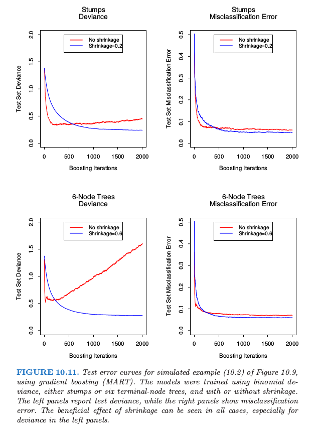
Subsampling¶
- Stochastic gradient boosting - each iteration sample a fraction \eta of the training observations (without replacement)
- A typical value \eta=0.5
- Empirically subsampling without shrinkage works poorly 不结合 shrink 似乎比不进行采样要差?
- Subsampling with shrinkage works well
- Now we have 4 parameters to estimate J, M, \nu, \eta. 一般地，通过前期的尝试确定合适的 J, \nu, \eta, 将 M 留作主要的参数.
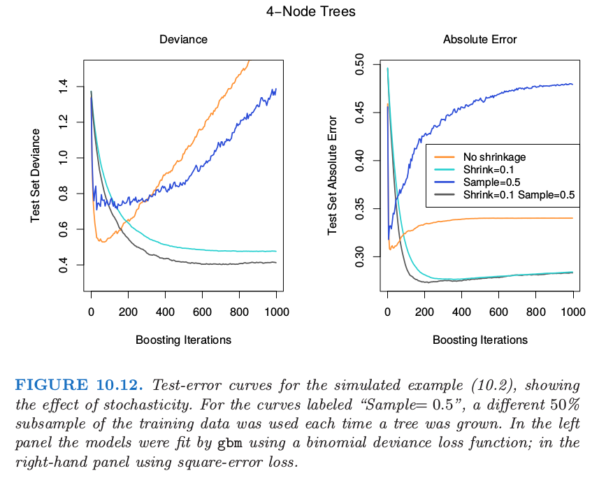
sklearn 中有份代码画的图类似.